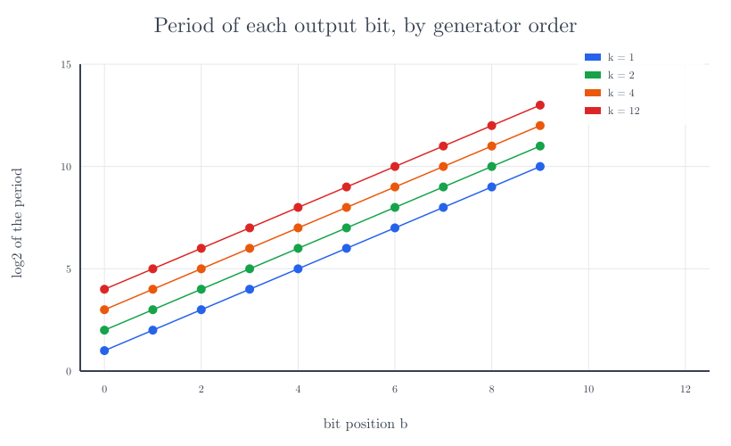
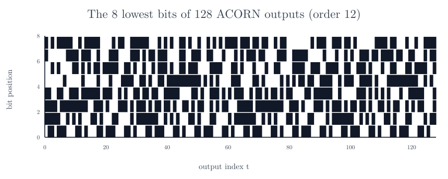
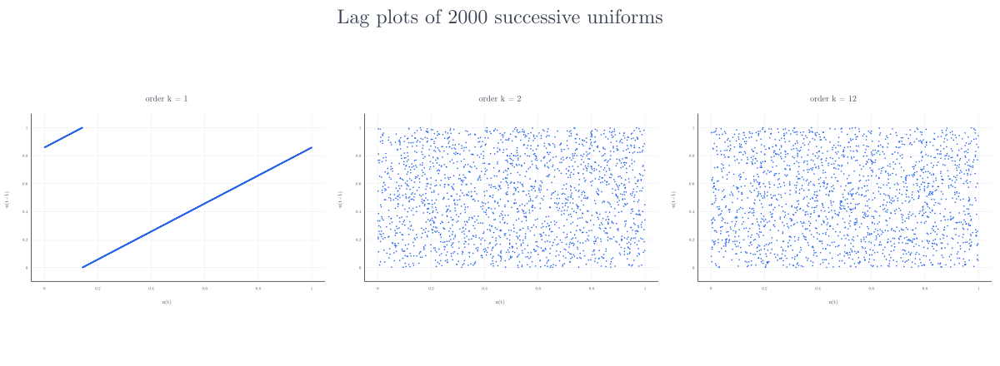
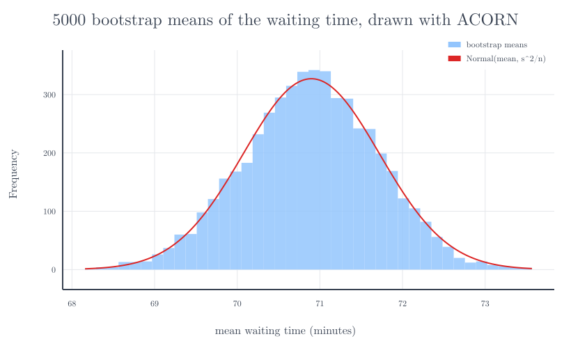

The ACORN Generator: Closed Form, Bit Periods and a Bootstrap
Abstract
ACORN (Wikramaratna, 1989) produces pseudorandom numbers by taking repeated cumulative sums of a vector of integers modulo \(2^{64}\). We derive a closed form for its state after \(n\) steps, which gives an \(O(k^2)\) jump-ahead, and use it to prove that bit \(b\) of an order-\(k\) generator repeats with period exactly \(2^{\,b+1+\lfloor\log_2 k\rfloor}\). A battery of statistical tests then shows the practical consequences. The low bits fail, and order 1 is a Weyl sequence that fails the serial test. The top bits of a generator of order 12 pass every test. Finally we use the generator for its intended job: a bootstrap of the mean waiting time between Old Faithful eruptions.
The recurrence
Fix an order \(k\ge 1\) and a state \((Y_0,\dots,Y_k)\) of 64-bit words, with \(Y_0\) odd. One step updates the words in order,
and outputs \(Y_k\). \(Y_0\) never changes. It is an additive increment, so
\(Y_1\) is a Weyl sequence \(Y_1+nY_0\), and each higher word is a running sum
of the word below it. Unsigned overflow in C++ is exactly reduction modulo
\(2^{64}\), so a step costs \(k\) additions. Acorn64(seed, k) fills the state
from SplitMix64 and makes \(Y_0\) odd. The vector constructor takes a state
directly, which is useful for checking by hand:
#include <dm/dm.hpp>
int main() {
dm::random::Acorn64 rng(std::vector<std::uint64_t>{1, 2, 3});
for (int step = 1; step <= 4; ++step) {
const auto out = rng.next_u64();
std::print("step {}: state {} -> output {}\n", step, rng.state(), out);
}
}step 1: state [1, 3, 6] -> output 6 step 2: state [1, 4, 10] -> output 10 step 3: state [1, 5, 15] -> output 15 step 4: state [1, 6, 21] -> output 21
With \(Y_0=1\), \(Y_1\) counts up by one and \(Y_2\) adds the new \(Y_1\) at each step: \(3+3=6\), \(6+4=10\), \(10+5=15\), \(15+6=21\).
A closed form and a jump-ahead
Write \(Y_j^{(n)}\) for word \(j\) after \(n\) steps. Then, for all \(n\ge 0\),
with the conventions \(\binom{n-1}{0}=1\) and \(\binom{r-1}{r}=0\) for \(r\ge 1\), so the formula is the identity at \(n=0\).
Proof. We use induction on \(n\), and for fixed \(n\) on \(j\). For \(j=0\) both sides equal \(Y_0^{(0)}\). Because the words are updated in order, \(Y_j^{(n)} = Y_j^{(n-1)} + Y_{j-1}^{(n)}\): the old value of word \(j\) plus the new value of word \(j-1\). By the two induction hypotheses, the coefficient of \(Y_m^{(0)}\) on the right is
by Pascal's rule, which is the claimed coefficient. \(\square\)
So the output \(Y_k^{(n)}\) is a polynomial of degree \(k\) in \(n\), the
\(k\)-fold "discrete integral" of the constant \(Y_0\), plus lower-order terms
from the seed. The formula also gives a jump-ahead. Acorn64::discard(n)
computes the \(k+1\) coefficients \(c_r=\binom{n+r-1}{r}\bmod 2^{64}\) exactly,
by tracking powers of two separately from odd factors and inverting the odd
denominators modulo \(2^{64}\). It then takes the triangular sum, at \(O(k^2)\)
cost for any \(n\).
#include <dm/dm.hpp>
int main() {
dm::random::Acorn64 stepped(2026), jumped(2026);
for (int t = 0; t < 100000; ++t)(void) stepped.next_u64();
jumped.discard(100000);
std::print("after 1e5 steps, stepping and discard() agree: {}\n",
stepped.state() == jumped.state());
dm::random::Acorn64 far(2026);
const auto start = std::chrono::steady_clock::now();
far.discard(1'000'000'000'000'000'000ULL);
const std::chrono::duration<double, std::micro> took =
std::chrono::steady_clock::now() - start;
std::print("jumping 1e18 steps took {:.1f} microseconds; next output {:#018x}\n",
took.count(), far.next_u64());
}after 1e5 steps, stepping and discard() agree: true jumping 1e18 steps took 1.1 microseconds; next output 0xa16ebf41e865e5c2
Jump-ahead gives independent parallel streams cheaply: stream \(s\) starts \(s\cdot 2^{50}\) steps along the same sequence.
The period of each bit
Bits of the output are not equally random. Reducing the closed form modulo \(2^{B}\) shows that the low \(B\) bits of the output depend only on the seed and on \(\binom{n-1+r}{r} \bmod 2^B\). These binomials are periodic in \(n\).
Claim. Let \(L=\lfloor\log_2 k\rfloor\) and \(P=2^{\,B+L}\). Then \(Y_k^{(n+P)}\equiv Y_k^{(n)} \pmod{2^B}\) for every \(n\). So bits \(0,\dots,B-1\) of the output repeat with a period dividing \(P\).
Proof. By Vandermonde's identity, for \(r\le k\),
Kummer's theorem gives \(v_2\!\binom{2^s}{i} = s - v_2(i)\) for \(1\le i\le 2^s\), where \(v_2\) counts factors of two. Here \(i \le r\le k<2^{L+1}\), so \(v_2(i)\le\lfloor\log_2 i\rfloor\le L\) and \(v_2\binom{P}{i}\ge B\). Every term with \(i\ge 1\) is therefore divisible by \(2^B\), and \(\binom{x+P}{r}\equiv\binom{x}{r}\pmod{2^B}\). Applying this to each coefficient of the closed form proves the claim. \(\square\)
For bit \(b\) (so \(B=b+1\)) the bound is \(2^{\,b+1+L}\). Bit 0 of an order-12
generator repeats every 16 outputs. The whole 64-bit output has period at most
\(2^{64+L}\), long enough for any simulation. The bound is also attained.
random::bit_periods() finds the smallest power-of-two period of each bit in a
sample, and the measurements below lie exactly on the predicted lines.
#include <dm/dm.hpp>
int main() {
std::filesystem::create_directories("build");
const std::vector<std::pair<std::size_t, dm::RGB>> orders{
{1, {37, 99, 235}}, {2, {22, 163, 74}}, {4, {234, 88, 12}},
{12, {220, 38, 38}}
};
auto plot = dm::graphics::RPlot::create();
std::vector<std::string> labels;
std::vector<dm::RGB> colors;
for (const auto & [k, color] : orders) {
const auto periods =
dm::random::bit_periods(dm::random::Acorn64(7, k), 10, 1 << 16);
std::vector<double> bit, measured, predicted;
for (int b = 0; b < 10; ++b) {
bit.push_back(b);
measured.push_back(std::log2(double(periods[b])));
predicted.push_back(b + 1 + std::floor(std::log2(double(k))));
}
plot.lines(bit, predicted, color, 1.5).points(bit, measured, color, 5.0);
labels.push_back(std::format("k = {}", k));
colors.push_back(color);
std::print("k = {:2}: log2 period of bits 0..9 = {}\n", k, measured);
}
plot.legend(labels, colors).title("Period of each output bit, by generator order").y_limits(0, 15).x_limits(-0.5, 12.5).x_label("bit position b").y_label("log2 of the period").size(820, 500).save_svg("build/acorn_bit_periods.svg");
}k = 1: log2 period of bits 0..9 = [1, 2, 3, 4, 5, 6, 7, 8, 9, 10] k = 2: log2 period of bits 0..9 = [2, 3, 4, 5, 6, 7, 8, 9, 10, 11] k = 4: log2 period of bits 0..9 = [3, 4, 5, 6, 7, 8, 9, 10, 11, 12] k = 12: log2 period of bits 0..9 = [4, 5, 6, 7, 8, 9, 10, 11, 12, 13]

Drawing the low bits makes the structure visible. random::bit_plot() draws one
row per bit and one column per output, dark where the bit is 1. In 128 outputs
of an order-12 generator, bit 0 repeats eight times (period 16), bit 1 four
times, bit 2 twice, and bit 3 once. From bit 4 upwards the period (256 or more)
is longer than the window, and the rows look irregular.
#include <dm/dm.hpp>
int main() {
std::filesystem::create_directories("build");
dm::random::Acorn64 rng(7, 12);
std::vector<std::uint64_t> outputs(128);
for (auto &v : outputs) v = rng.next_u64();
dm::random::bit_plot(outputs, 8).title("The 8 lowest bits of 128 ACORN outputs (order 12)").size(900, 360).save_svg("build/acorn_low_bits.svg");
}
This is why RandomGenerator::uniform01() uses only the top 53 bits of each
output. Those bits have periods of at least \(2^{12+L}\), and they mix
contributions from every word of the state.
Statistical tests
random::quality_tests() runs seven standard tests on fresh draws and returns a
frame with one row per test. The first four use uniform01(). They are a
100-cell chi-square test and a Kolmogorov-Smirnov test of uniformity, a
chi-square test on non-overlapping pairs in a \(10\times 10\) grid, and the
lag-1 correlation as \(z=r\sqrt n\). The last three look at the raw words: a
monobit test of the lowest and the highest bit, and a chi-square test of the
lowest byte. Under the null hypothesis each p-value is uniform on \((0,1)\). A
generator fails when it gives p-values extremely close to 0, or to 1, the
latter meaning the counts are too even to be random. The table compares ACORN of
orders 1, 2 and 12 with xoshiro256**, a modern generator, using \(10^5\) draws
per test.
#include <dm/dm.hpp>
int main() {
dm::random::Acorn64 k1(2026, 1), k2(2026, 2), k12(2026, 12);
dm::random::Xoshiro256StarStar xoshiro(2026);
const auto p = [](dm::random::RandomGenerator & g) {
return dm::random::quality_tests(g, 100000).get_column<double>("p_value").values();
};
const auto table =
dm::random::quality_tests(k12, 100000) |
dm::select("test", "statistic") |
dm::rename("statistic", "ACORN k=12 statistic") |
dm::mutate("p, ACORN k=1", p(k1)) | dm::mutate("p, ACORN k=2", p(k2)) |
dm::mutate("p, ACORN k=12", p(k12)) |
dm::mutate("p, xoshiro256**", p(xoshiro));
std::print("{}\n", table.to_md(3));
}| test | ACORN k=12 statistic | p, ACORN k=1 | p, ACORN k=2 | p, ACORN k=12 | p, xoshiro256** |
|---|---|---|---|---|---|
| Uniformity, chi-square (100 cells) | 101.644 | 1.000 | 0.002 | 0.016 | 0.274 |
| Uniformity, Kolmogorov-Smirnov | 0.005 | 1.000 | 0.378 | 0.482 | 0.137 |
| Serial pairs, chi-square (10 x 10 cells) | 106.986 | 0.000 | 0.815 | 0.819 | 0.327 |
| Lag-1 correlation, z = r sqrt(n) | -0.349 | 0.000 | 0.670 | 0.821 | 0.912 |
| Monobit, lowest bit (z) | 79.057 | 1.000 | 1.000 | 0.000 | 0.815 |
| Monobit, highest bit (z) | -1.442 | 0.985 | 0.118 | 0.390 | 0.225 |
| Lowest byte, chi-square (256 cells) | 56224.650 | 1.000 | 1.000 | 0.000 | 0.045 |
Three patterns stand out.
- Order 1 is the Weyl sequence \(u_t = (Y_1 + tY_0)/2^{64} \bmod 1\). It is more evenly spread than any random sample: both uniformity tests give \(p\approx 1\). But each draw determines the next, \(u_{t+1}=u_t+Y_0/2^{64} \bmod 1\), so the serial-pairs test and the correlation test fail badly. The lag plot below shows it.
- Every ACORN order fails the low-bit tests, in one direction or the other. Bit 0 has period \(2^{1+L}\), so its frequency of ones is a fixed fraction \(m/2^{1+L}\) set by the seed. For order 12 it is \(m/16\), and unless \(m=8\) the monobit statistic grows like \(\sqrt n\) (here \(z=79\), so \(m=10\)). For orders 1 and 2 the bit is exactly balanced, and \(p=1\) is just as damning. The low byte has period \(2^{8+L}\), so its counts are one fixed pattern repeated, not random counts.
- The top-bit tests of orders 2 and 12 look fine, apart from a few small p-values such as order 2's uniformity test. Whether these are chance needs more than one run.
A single p-value cannot answer that question. Knuth's two-level test can. Run the battery on 40 seeds, so that each test yields 40 p-values. If the generator is good, those p-values are a sample from \(U(0,1)\), which the Kolmogorov-Smirnov test checks.
#include <dm/dm.hpp>
int main() {
const auto second_level = [](std::size_t k) {
std::vector<std::vector<double>> p(7);
for (int seed = 1; seed <= 40; ++seed) {
dm::random::Acorn64 rng(seed, k);
const auto row =
dm::random::quality_tests(rng, 100000).get_column<double>(
"p_value").values();
for (std::size_t t = 0; t < 7; ++t) p[t].push_back(row[t]);
}
std::vector<double> ks, small;
for (const auto &v : p) {
ks.push_back(dm::stats::ks_test_one_sample_uniform(v).p_value);
small.push_back(double(std::ranges::count_if(v, [](double x) {
return x < 0.05;
})) / v.size());
}
return std::pair{ks, small};
};
const auto[ks2, small2] = second_level(2);
const auto[ks12, small12] = second_level(12);
dm::random::Acorn64 any(1);
std::print("{}\n",
dm::random::quality_tests(any, 1000) | dm::select("test") |
dm::mutate("k=2: KS p of 40 p-values", ks2) |
dm::mutate("k=2: share p < 0.05", small2) |
dm::mutate("k=12: KS p of 40 p-values", ks12) |
dm::mutate("k=12: share p < 0.05", small12) | dm::to_md(3));
}| test | k=2: KS p of 40 p-values | k=2: share p < 0.05 | k=12: KS p of 40 p-values | k=12: share p < 0.05 |
|---|---|---|---|---|
| Uniformity, chi-square (100 cells) | 0.447 | 0.025 | 0.548 | 0.025 |
| Uniformity, Kolmogorov-Smirnov | 0.664 | 0.025 | 0.830 | 0.000 |
| Serial pairs, chi-square (10 x 10 cells) | 0.036 | 0.000 | 0.749 | 0.050 |
| Lag-1 correlation, z = r sqrt(n) | 0.366 | 0.075 | 0.125 | 0.100 |
| Monobit, lowest bit (z) | 0.000 | 0.000 | 0.000 | 0.675 |
| Monobit, highest bit (z) | 0.587 | 0.000 | 0.952 | 0.050 |
| Lowest byte, chi-square (256 cells) | 0.000 | 0.000 | 0.000 | 1.000 |
For order 12, the five tests on the top bits give uniformly spread p-values, with about 5% of seeds below 0.05, as expected. So the small values in the first table were chance. Order 2 is borderline on the serial-pairs test: its second-level p-value is 0.036, and no seed falls below 0.05. Its pairs are somewhat more even than random pairs would be. The two low-bit tests fail for every seed of both orders, with a second-level p-value of 0. For order 12, 68% of seeds fail the monobit test at the 5% level. The rest happen to have a bit-0 frequency close to 8/16.
#include <dm/dm.hpp>
int main() {
std::filesystem::create_directories("build");
auto layout = dm::graphics::RLayout::create(1, 3);
for (std::size_t k : {1, 2, 12}) {
dm::random::Acorn64 rng(2026, k);
const auto u = dm::random::uniform_sample(rng, 2001);
const std::vector<double> x(u.begin(), u.end() - 1), y(u.begin() + 1,
u.end());
auto panel = dm::graphics::RPlot::create();
panel.points(x, y, dm::RGB{37, 99, 235}, 2.0).title(
std::format("order k = {}", k)).x_label("u(t)").y_label("u(t+1)");
layout.add(panel);
}
layout.title("Lag plots of 2000 successive uniforms").size(1200, 440).save_svg("build/acorn_lag_plots.svg");
}
Order 2 looks random in the lag plot and passes the tests on the top bits. In
three dimensions its draws still carry a simple structure: \(Y_2^{(n)}\) is a
quadratic in \(n\), so its second difference is the constant \(Y_0\).
Wikramaratna recommends orders of at least 10, and the default order of
Acorn64 is 12.
Using the generator: a bootstrap of Old Faithful
dm::datasets::faithful() holds 272 eruptions of the Old Faithful geyser: the
eruption length and the waiting time to the next eruption, in minutes. The
waiting times are bimodal, with short waits after short eruptions.
#include <dm/dm.hpp>
namespace agg = dm::agg;
int main() {
std::print("{}\n",
dm::datasets::faithful() |
dm::pivot_longer({"eruptions", "waiting"}, "variable", "minutes") |
dm::group_by("variable") |
dm::summarise(agg::n("n"), agg::mean("minutes", "Mean"),
agg::sd("minutes", "SD"),
agg::min("minutes", "Min"),
agg::median("minutes", "Median"),
agg::max("minutes", "Max")) | dm::to_md(2));
}| variable | n | Mean | SD | Min | Median | Max |
|---|---|---|---|---|---|---|
| eruptions | 272 | 3.49 | 1.14 | 1.6 | 4 | 5.1 |
| waiting | 272 | 70.90 | 13.59 | 43.0 | 76 | 96.0 |
The standard error of the mean waiting time has the textbook estimate
\(s/\sqrt n\). The bootstrap (Efron, 1979) estimates it without a formula. Draw
\(B\) resamples of size \(n\) with replacement from the data, and take the
standard deviation of their means. Here the draws come from ACORN through
uniform_u64(), which is unbiased: it takes the index from the high bits of
each output (see below). We compare the result with the library's
stats::Bootstrap, which uses its own generator.
#include <dm/dm.hpp>
int main() {
std::filesystem::create_directories("build");
const auto waiting =
dm::datasets::faithful().get_column<double>("waiting").values();
const std::size_t n = waiting.size(), B = 5000;
const auto mean = [](const std::vector<double> & v) {
return std::accumulate(v.begin(), v.end(), 0.0) / v.size();
};
const auto bootstrap_means = [&](auto draw_index) {
std::vector<double> means(B);
for (auto &m : means) {
double sum = 0.0;
for (std::size_t i = 0; i < n; ++i) sum += waiting[draw_index()];
m = sum / n;
}
return means;
};
const auto sd = [&](const std::vector<double> & v) {
const double centre = mean(v);
double ss = 0.0;
for (double x : v) ss += (x - centre) * (x - centre);
return std::sqrt(ss / (v.size() - 1));
};
dm::random::Acorn64 rng(2026), naive(2026);
const auto means = bootstrap_means([&] {
return rng.uniform_u64(0, n - 1);
});
const auto means_mod = bootstrap_means([&] {
return naive.next_u64() % n;
});
const double se_acorn = sd(means), se_modulo = sd(means_mod);
double s2 = 0.0;
const double xbar = mean(waiting);
for (double w : waiting) s2 += (w - xbar) * (w - xbar);
const double se_formula = std::sqrt(s2 / (n - 1) / n);
const auto library =
dm::stats::Bootstrap({.num_resamples = B}).run(waiting, mean);
std::print("mean waiting time {:.3f} min\n", xbar);
std::print("s / sqrt(n) {:.4f}\n", se_formula);
std::print("bootstrap SE, ACORN {:.4f}\n", se_acorn);
std::print("bootstrap SE, Bootstrap {:.4f}\n", library.standard_error);
std::print("bootstrap SE, ACORN with next_u64() % n {:.4f}\n", se_modulo);
const std::size_t bins = 40;
auto plot =
dm::graphics::RPlot::hist(means, bins, "bootstrap means",
dm::RGB{147, 197, 253});
const auto[lo, hi] = std::ranges::minmax(means);
std::vector<double> x, density;
for (int i = 0; i <= 200; ++i) {
const double v = lo + (hi - lo) * i / 200.0;
x.push_back(v);
density.push_back(B * (hi - lo) / bins * dm::random::normal_pdf(
v, xbar, se_formula));
}
plot.lines(x, density, "Normal(mean, s^2/n)", dm::RGB{220, 38, 38}, 2.0).title("5000 bootstrap means of the waiting time, drawn with ACORN").x_label("mean waiting time (minutes)").size(820, 500).save_svg("build/acorn_bootstrap.svg");
}mean waiting time 70.897 min s / sqrt(n) 0.8243 bootstrap SE, ACORN 0.8125 bootstrap SE, Bootstrap 0.8245 bootstrap SE, ACORN with next_u64() % n 0.7698

The two bootstrap estimates agree with each other and with \(s/\sqrt n\) to within Monte Carlo error. The standard deviation of an SE estimated from \(B\) resamples is about \(\mathrm{SE}/\sqrt{2B}\approx 1\%\). The waiting times are bimodal, but the means of 272 of them are already close to normal.
The last line shows the low-bit weakness doing damage. Drawing the index as
next_u64() % n underestimates the standard error by about 7%, far outside
Monte Carlo error. Since \(n=272=16\cdot 17\), the residue of the index modulo
16 is the lowest four bits of the output. Those bits have period
\(2^{4+3}=128\), so within every resample the indices are spread over the
residues modulo 16 almost exactly evenly. The resample is secretly stratified,
which lowers the variance of its mean. uniform_u64() avoids this. It returns
\(\lfloor x\,n/2^{64}\rfloor\), computed with Lemire's multiply-shift method,
which takes the index from the high bits of \(x\), and it rejects a few low
words to remove the remaining bias. (Writing this report uncovered exactly this
bug in the library's uniform_u64(), which used a modulo; it was fixed.)
Summary
- An order-\(k\) ACORN output is a degree-\(k\) polynomial in the step count
with seed-dependent coefficients,
\(Y_k^{(n)}=\sum_m\binom{n-1+k-m}{k-m}Y_m^{(0)}\). This gives an exact
\(O(k^2)\) jump-ahead,
Acorn64::discard(). - Bit \(b\) has period \(2^{\,b+1+\lfloor\log_2 k\rfloor}\), proved with
Kummer's theorem and confirmed by measurement. The low bits are not random, so
uniform01()uses only the top 53 bits. - Integer draws must come from the high bits: a modulo reduction inherits the low-bit periods and biased a bootstrap standard error by 7%.
- Low orders have visible structure. Order 1 is a Weyl sequence and order 2 has a constant second difference. At the default order of 12, the top bits pass a standard test battery, and the generator gives the same bootstrap answers as the library's default generator.
References
- R. S. Wikramaratna (1989). ACORN -- a new method for generating sequences of uniformly distributed pseudo-random numbers. Journal of Computational Physics 83, 16--31.
- E. E. Kummer (1852). Über die Ergänzungssätze zu den allgemeinen Reciprocitätsgesetzen. Journal für die reine und angewandte Mathematik 44, 93--146.
- D. E. Knuth (1997). The Art of Computer Programming, Vol. 2: Seminumerical Algorithms, 3rd ed., section 3.3.
- B. Efron (1979). Bootstrap methods: another look at the jackknife. Annals of Statistics 7, 1--26.